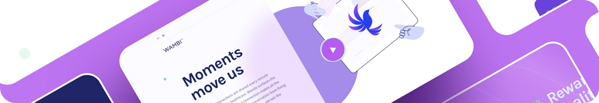
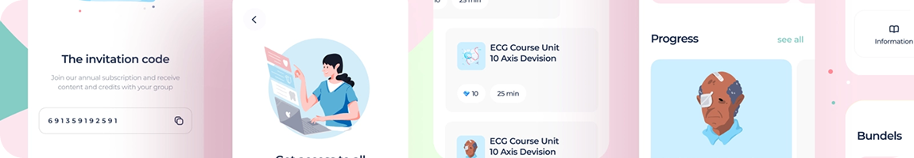

Projects
Competencies
-

HTML и CSS
это основа фронтенд разработки. Умение создавать и правильно структурировать HTML-документы, а также применять стили к этим документам на CSS, является обязательным навыком для каждого фронтенд разработчика.
-

JavaScript
это язык программирования, который используется для создания динамического и интерактивного пользовательского интерфейса. Хороший фронтенд разработчик должен быть знаком с основами JavaScript, включая работу с DOM-деревом, асинхронными запросами и манипуляцией данными на стороне клиента.
-

Работа с библиотеками и фреймворками
фронтенд разработчики должны быть знакомы с различными библиотеками и фреймворками, такими как React, Angular, Vue и другими. Умение использовать готовые решения, адаптировать их под нужды проекта и расширять их функциональность, является очень важным навыком.
-

Разработка для мобильных устройств и адаптивная верстка
фронтенд разработчики должны быть знакомы с различными библиотеками и фреймворками, такими как React, Angular, Vue и другими. Умение использовать готовые решения, адаптировать их под нужды проекта и расширять их функциональность, является очень важным навыком.
Services
-
Разработка сайта под ключ
Это создание дизайн веб-сайтов, созданный для удобства пользователя и решения бизнес-задач Сайты должны быть понятными и удобными, ведь чем понятнее сайт, тем быстрее пользователь совершит целевое действие

-
Верстка сайтов
Это процесс создания HTML-документов и применения к ним стилей на CSS. Фронтенд разработчик может помочь создать привлекательный и удобный интерфейс для вашего сайта

-
Разработка мобильного интерфейса
Это процесс создания интерактивных элементов на странице с помощью JavaScript. Фронтенд разработчик может помочь создать динамический и удобный пользовательский интерфейс для вашего сайта или приложения.
Contacts:
telegram